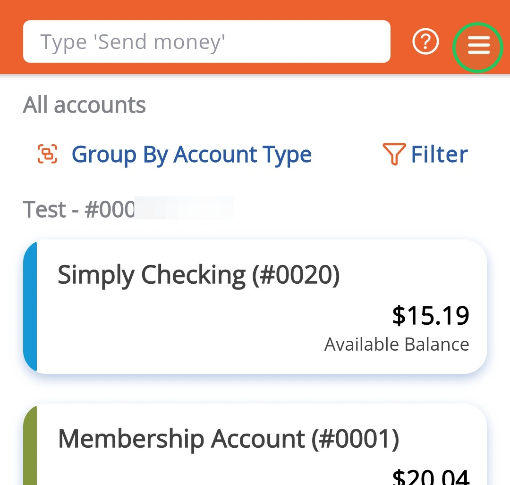
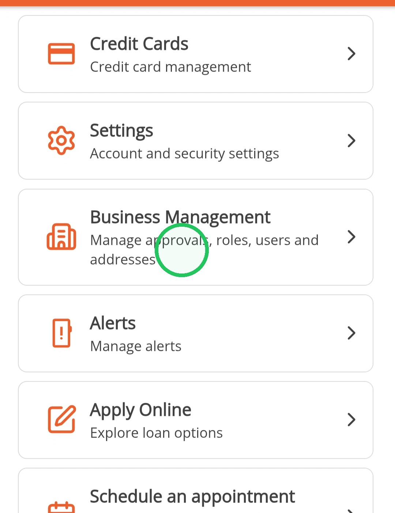
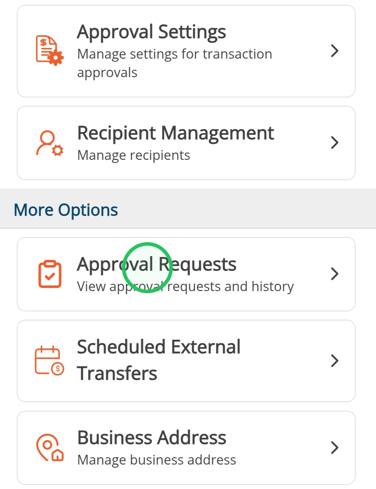
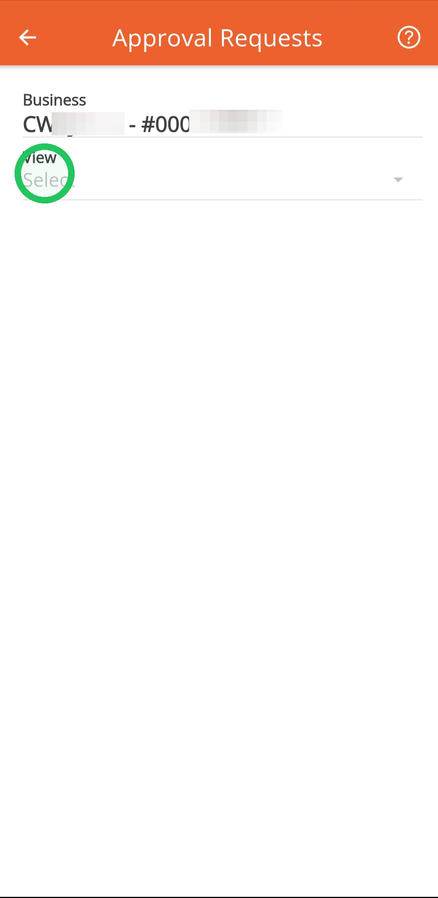
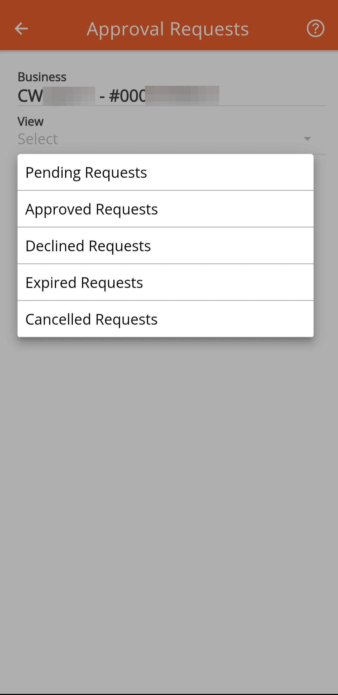
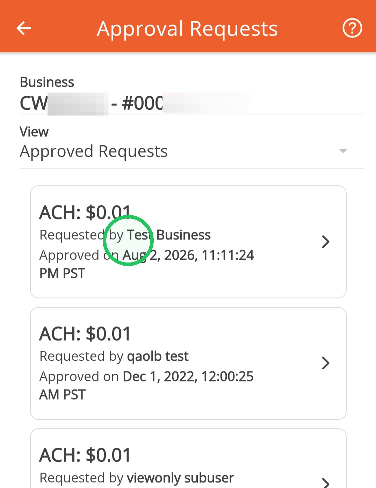
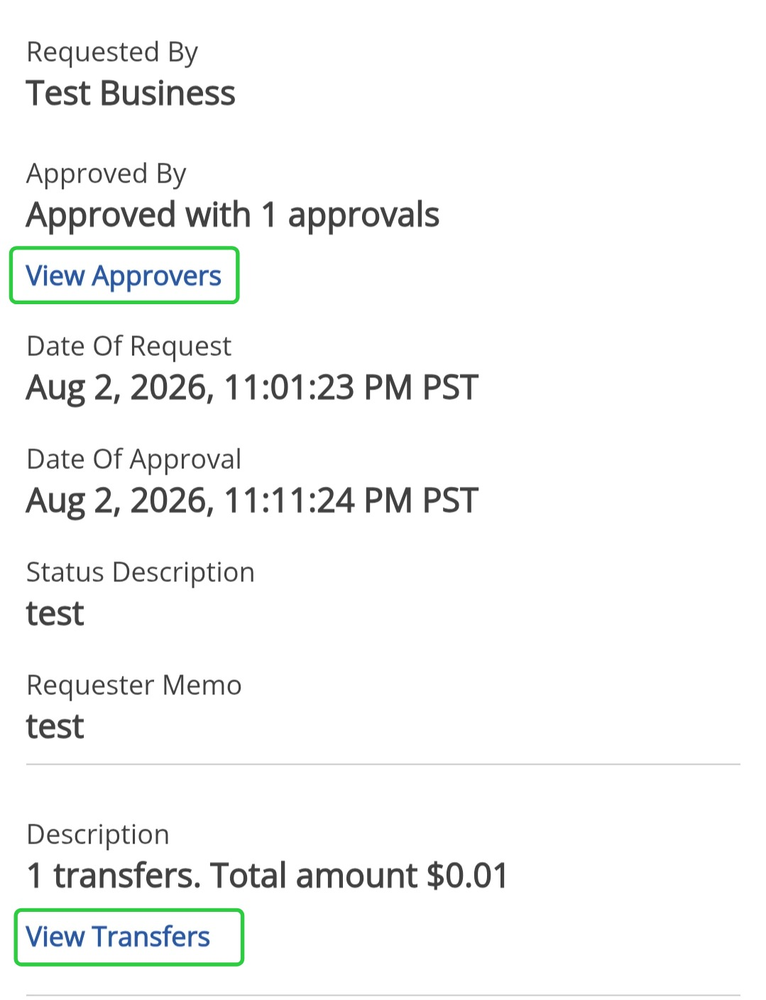

View ACH Transfer Requests for Approval
This guide will show you how to view pending transfers that require approval and also past approved, expired or canceled requests. These requests come in when ACH Transfers are set-up to require more than one approval.
1
Tap the menu icon

2
Tap "Business Management"

3
Tap "Approval Requests"

4
Tap "View"

5
Select which requests you are needing to view

6
Tapping any request will open up additional details

Viewing a Pending Request will let you see the transfer details, who requested the transfer and also let you approve or decline the request
7
On previously approved requests, you can view the approver and the transfers
